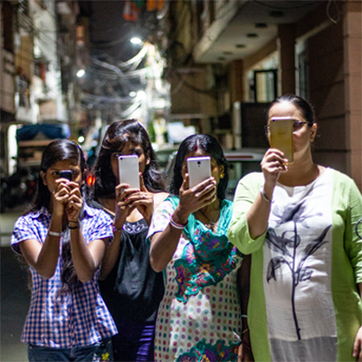
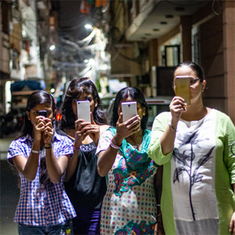

About Aashiyaan
आशियाँ | Aashiyaan is an interactive mobile documentary that has been co-created by domestic workers, homemakers and a filmmaker from Delhi. Filmed entirely in India, the transmedia project was developed with support from artists, volunteers, hackers and friends in New Delhi, India; Ryerson and York Universities, Canada; Code for Boston, USA and the Open Documentary Lab at MIT, USA.
The documentary is a living archive of the lives and experiences of the ‘invisible’ women of Delhi. It takes on many shapes. As an interactive mobile app it invites viewers to listen to and participate in women’s conversations about how they navigate unsafe urban geographies. You can also explore an audio-visual gallery that maps the psychogeographies of the women as they speak of nostalgia, loss and desire in the city.
What does Aashiyaan mean?
When cities are labelled unsafe, women appear as statistics and victims. आशियाँ | Aashiyaan challenges that dehumanization by presenting cross-class experiences of women in the city. The domestic labour performed by these women, who are also also the filmmakers, shapes their creative labour as they set up conversations, film everyday activities and even chase peacocks. आशियाँ | Aashiyaan translates to a nest, a home...your own personal sanctuary.
Co-Creators


 

These domestic workers and their employers i.e. homemakers in Delhi are the co-creators of Aashiyaan. Stayed tuned for the long form interactive which will show you their lives.
Questions, Answered
How can I help?
Download the app and encourage others to do so! Share your stories and strategies with #AashiyaanStories.
How can I contribute?
If you’re a developer, UI/UX designer, translator, animator or editor and want to contribute write to us at idoc.conversations@gmail.com.
I want to do more!
Organise living room or porch conversations between domestic workers and homemakers about their experiences of the city you live in. Document and share photos, videos and comments with us.
When can we see the long form?
Watch this space for more information on the life stories of the co-creators.
How may I access more resources?
Write to us at idoc.conversations@gmail.com and we’ll email you a list!